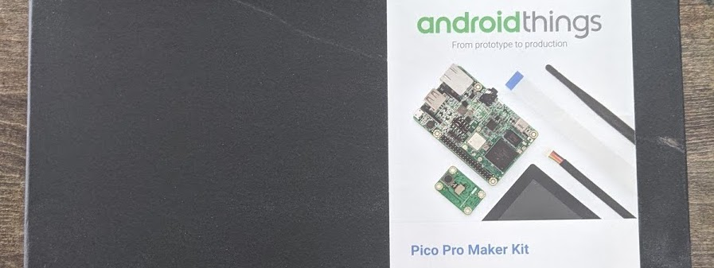
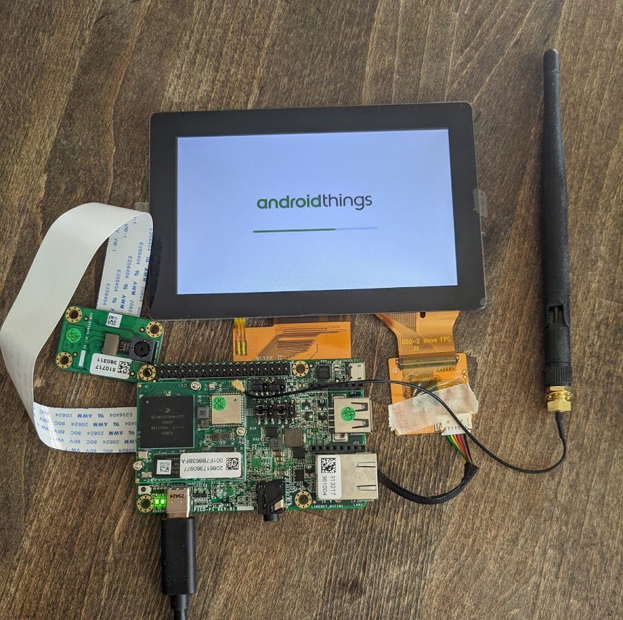
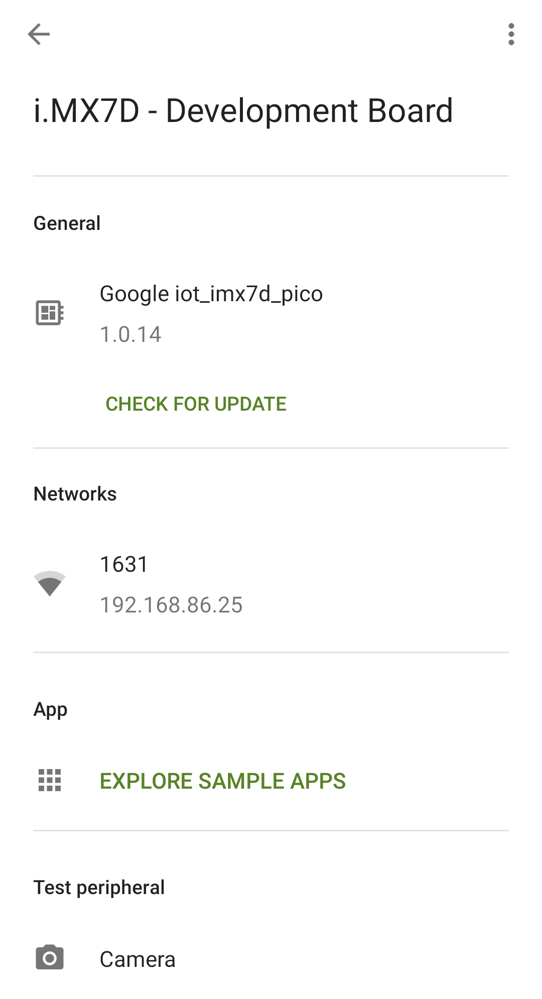
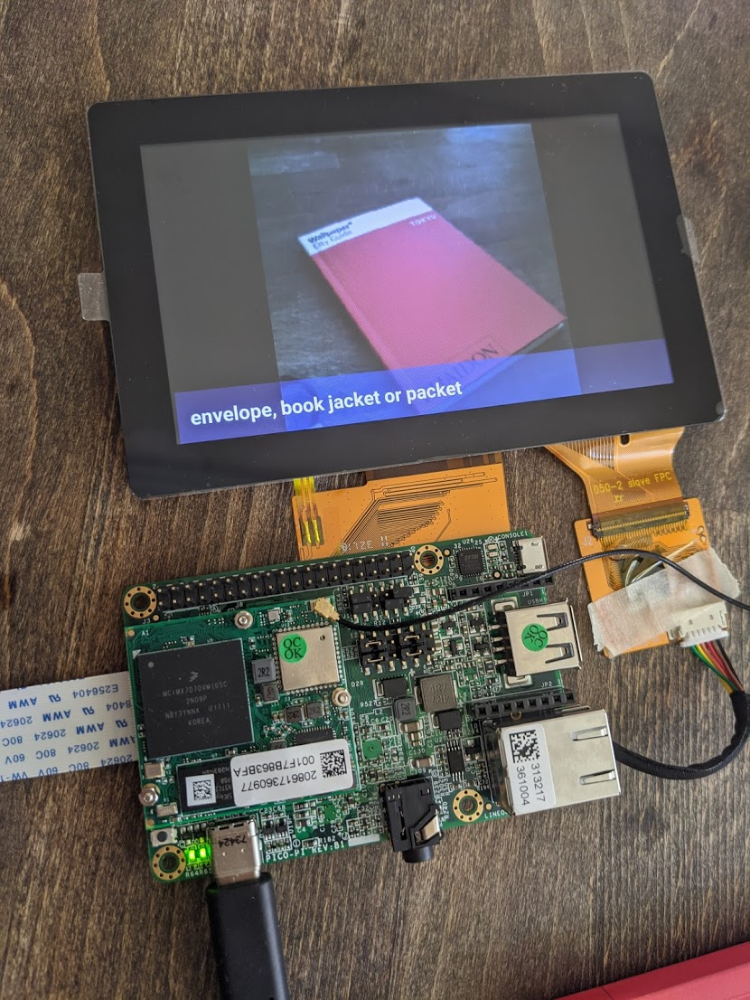
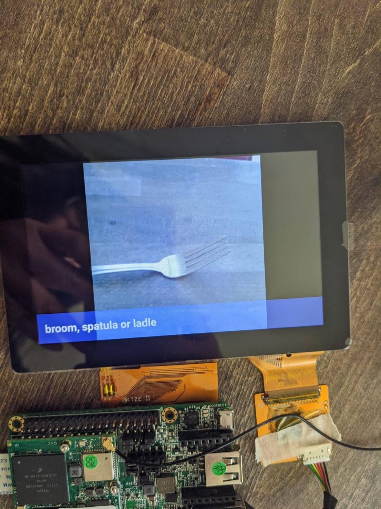
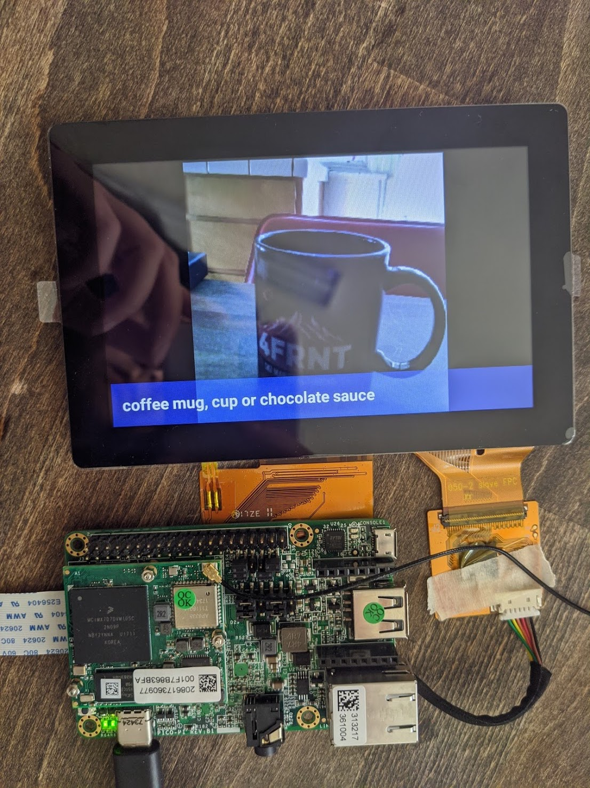
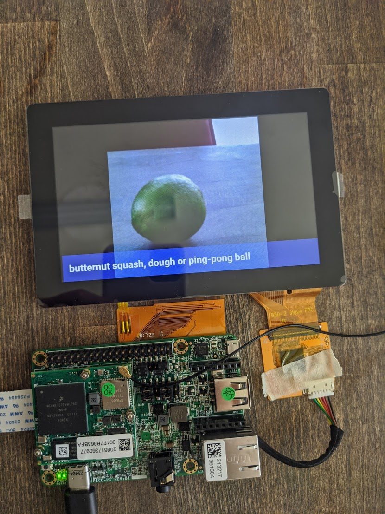
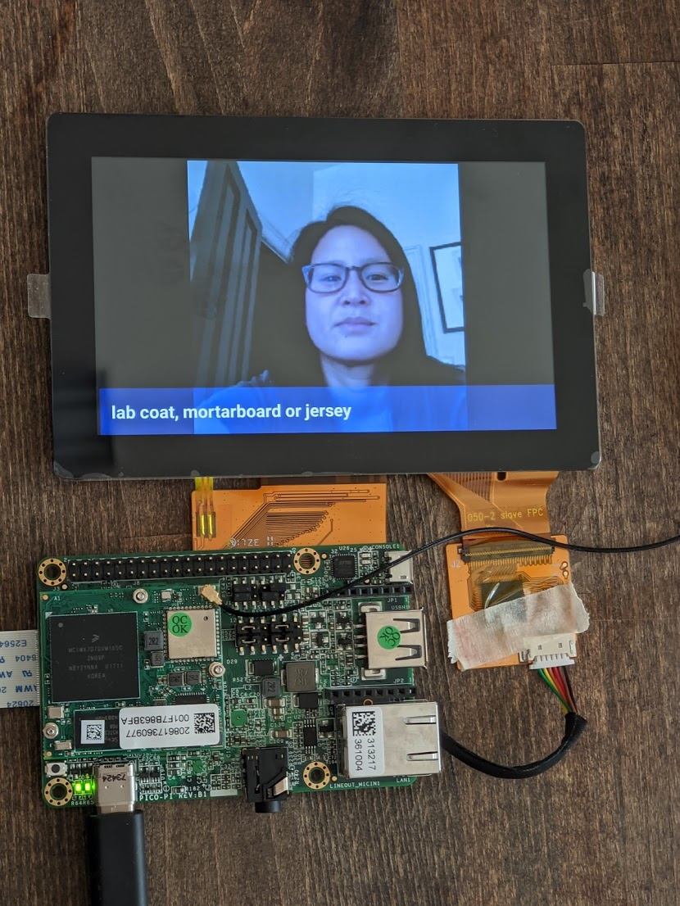

Like many other people quarantining during COVID, I picked up a few new hobbies with all of the extra time that I at home. Some of my new hobbies consisted of paint-by-numbers, baking goods that I couldn't finish, and digging through things that I haven't touched in ages.
One of the things that I found laying around was a brand new, unopened Pico Pro Maker Kit that I had received at GHC a few years ago. I figured this would be a fun opportunity to test it out and tinker with some hardware.
CONNECTING AND SETTING UP THE KIT
I followed the instructions on the Android Things developer guide to connect and setup the kit.
The kit came with:
- Pico i.MX7 Dual Development Board
- Camera module
- 5-inch multi-touch display
- Wi-Fi antenna

Once I finished connecting the kit, I was ready to set things up. Through the Android Things console, I created a new product and downloaded the latest build. I then flashed the board with the latest image and ran setup utility to connect the board to my home wifi. I also downloaded the Android Things Toolkit on my phone to run sample apps.
Once the board was connected to my wifi, I was able to find my dev board on the Android Things Toolkit app. I explored the sample apps and selected TensorFlow Lite.

RUNNING TENSORFLOW LITE
TensorFlow Lite works by taking in an image input and outputting a few words that it thinks the object should be classified as. First, I held up my board's camera module towards an object. When I'm ready, I tap the multi-display screen and it triggers a snapshot to be taken. The multi-display screen will then instantly display the snapshot and a few words it may classify the object as. I found a few of them accurate, and some of them very inaccurate (mostly human face detection). Below are a few of the results I got.





← Back to Blogs